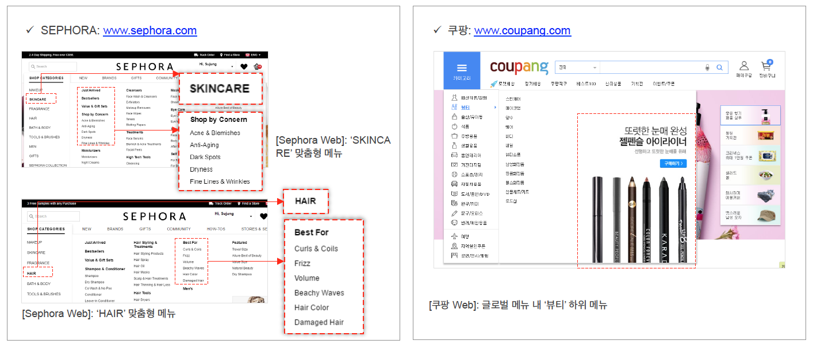

Date
Dec 2016 - Mar 2017
(4 months)
Industry
Cosmetics Industry
Client
Amorepacific Corporation
(PMO: IBM)
My Role
- Divided the five stages of customer journeys into major stages and derives the detailed main stages of the process
- Analyzed and integrated of 12 steps in AMOREPACIFIC's five representative shopping malls (AP Mall, Aritaum, Innisfree, Etude House)
- Benchmarked the competitors; amazon.com, walmart.com, sephora.com, etc
Problem
- It is difficult to standardize the process of the site by country because the standardization of the authentication and settlement method is different by country
Standardization of eCommerce
UX To-Be Process
Overview
By deriving the AS-IS Pain-Point through analysis of 12 processes, functions, and guides, and establishing the UX TO-BE standard model based on this, we have reduced the drop-off rate and the conversion rate.
Work Process
1. Process improvement
- Reduce visit&transaction processes by up to 25% compared to traditional
2. Presenting a standard feature
- Present standardized functions to 12 processes centered on functions reflecting the latest trends
3. Building UX guidelines
- Enhance customers' conversion rates by defining messaging guides to motivate customers to buy
Result

[Analysis of 12 steps]

[Benchmarking]